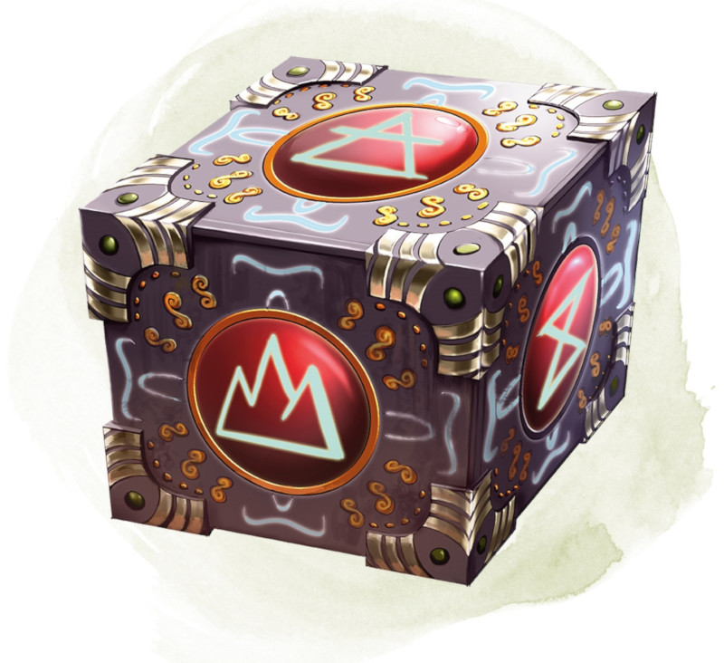

Cube des plans
[ Cubic Gate ]
Objet merveilleux, légendaire
Ce cube de 7,50 centimètres de côté irradie une énergie magique palpable. Les six faces du cube sont chacune reliées à un plan d'existence différent, dont l'un d'eux est le plan matériel. Les autres faces sont reliées à des plans choisis par le MD.
Vous pouvez utiliser une action pour appuyer sur une face du cube et ainsi lancer le sort portail. Un portail s'ouvre alors vers le plan d'existence auquel est reliée la face du cube que vous avez pressée. Sinon, si vous utilisez une action pour appuyer deux fois sur la même face, vous pouvez lancer le sort changement de plan (sauvegarde DD 17) avec le cube et transporter les cibles dans le plan d'existence relié à la face concernée.
Le cube possède 3 charges. Chaque utilisation du cube dépense une charge. Le cube récupère 1d3 charges dépensées chaque jour à l'aube.
Vous pouvez utiliser une action pour appuyer sur une face du cube et ainsi lancer le sort portail. Un portail s'ouvre alors vers le plan d'existence auquel est reliée la face du cube que vous avez pressée. Sinon, si vous utilisez une action pour appuyer deux fois sur la même face, vous pouvez lancer le sort changement de plan (sauvegarde DD 17) avec le cube et transporter les cibles dans le plan d'existence relié à la face concernée.
Le cube possède 3 charges. Chaque utilisation du cube dépense une charge. Le cube récupère 1d3 charges dépensées chaque jour à l'aube.
Dungeon Master´s Guide (SRD)
